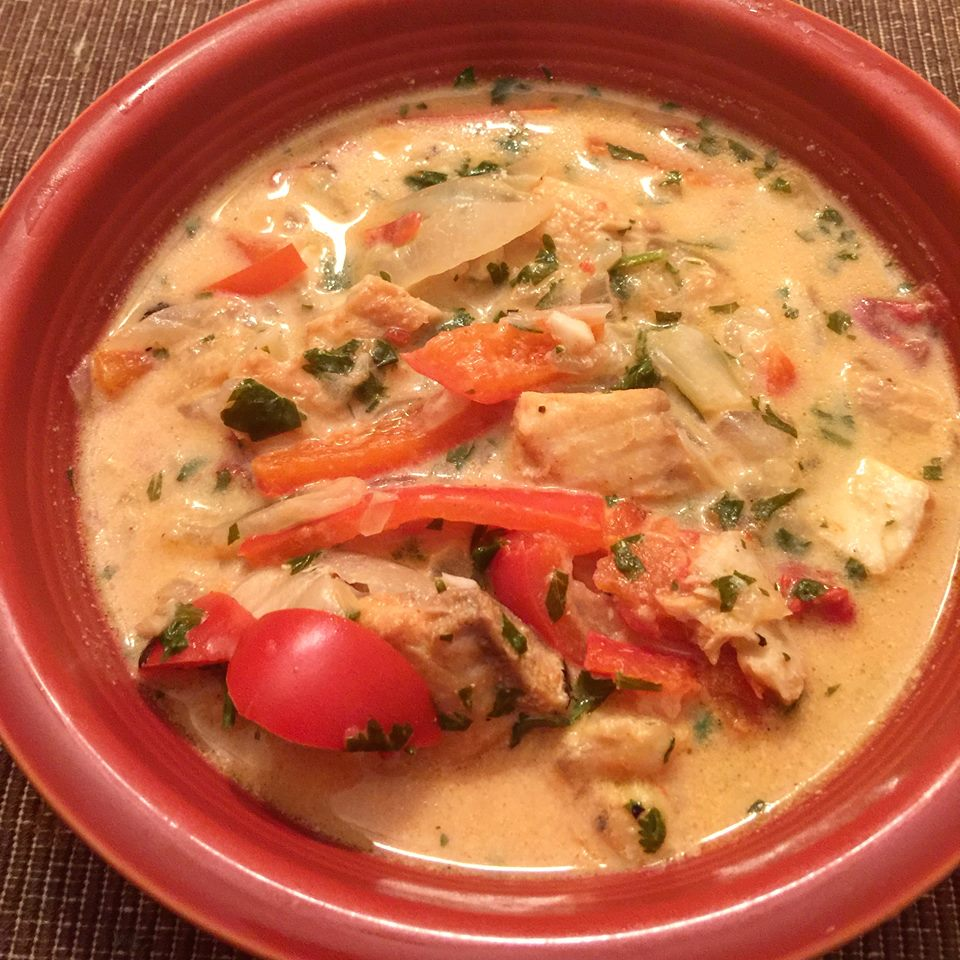

Home
Brazilian Fish Stew

Description
This super easy but hearty dish is full of flavor and absolutely
delicious! It's a simplified version of a common Brazilian dish.
This can be made easily on the stove-top or in the slow cooker for a
no-fail convenience meal. Use salmon in place of tilapia for a stronger
fish flavor. Serve with hot rice or warm tortillas.
Ingredients
- 3 tablespoons lime juice
- 1 tablespoon ground cumin
- 1 tablespoon paprika
- 2 teaspoons minced garlic
- 1 teaspoon salt
- 1 teaspoon ground black pepper
- 1 1/2 pounds tilapia fillets, cut into chunks
- 2 tablespoons olive oil
- 2 onions, chopped
- 4 large bell peppers, sliced
- 1 (16 ounce) can diced tomatoes, drained
- 1 (16 ounce) can coconut milk
- 1 bunch fresh cilantro, chopped (Optional)
Steps
-
Stir together the lime juice, cumin, paprika, garlic, salt,
and pepper in a bowl.
- Add the tilapia and toss to coat.
- Cover and refrigerate at least 20 minutes, up to 24 hours.
- Heat the olive oil in a large pot over medium-high heat.
- Quickly fry the onions in the oil 1 to 2 minutes.
- Reduce heat to medium.
-
Add the bell peppers, tilapia, and diced tomatoes to the
pot in succeeding layers.
- Pour the coconut milk over the mixture.
- Cover the pot and simmer 15 minutes, stirring occasionally.
-
Stir in the cilantro and continue cooking until the tilapia is
completely cooked through, another 5 to 10 minutes.
🔙 Go back